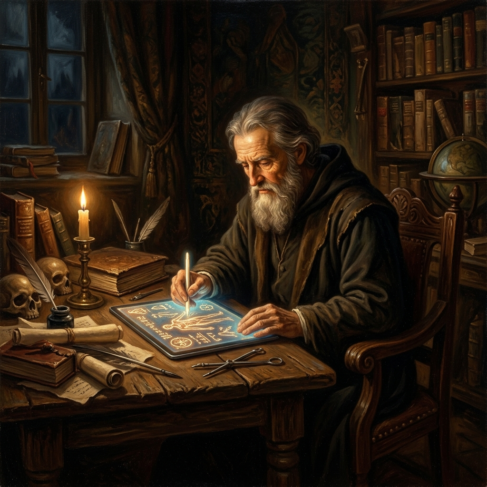
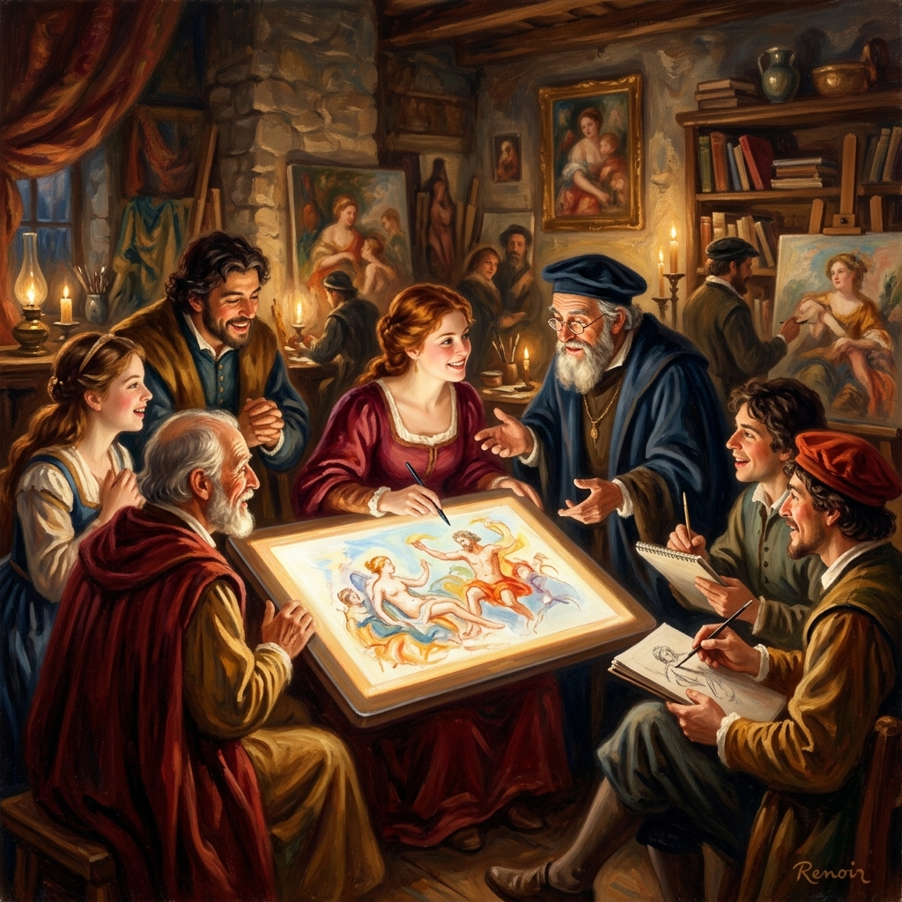

Transforme suas aulas e reuniões em obras-primas com o iScrev XBoard. Uma lousa interativa que une a genialidade da renascença com a potência do PWA e Desktop.

Traços macios gerados por curvas de Bézier e Engine Canvas puro. Sem engasgos, tão fluido quanto óleo sobre tela.
Instalação de 1-clique via navegador, funcionamento 100% offline e tecnologia Stale-While-Revalidate para auto-atualização.
Grave sua tela e áudio simultaneamente. Crie vídeo-aulas diretamente do quadro sem softwares externos.
Da mesma forma que as grandes oficinas de Florença reuniam mentes para construir o futuro, o iScrev XBoard é o estúdio colaborativo definitivo para professores, pensadores e artistas digitais modernos.
